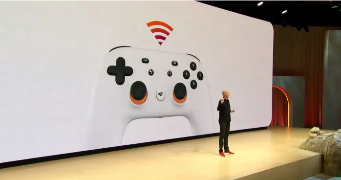

Desenvolvido por: Mateus Felix Vilela
O mais novo console de games do mercado, chamado de STADIA, foi revelado durante a 2019 Game Developers Conference (GDC 2019), nesta terça-feira (19).
Ao contrário das especulações sobre o lançamento de mais um console de mesa no mercado, a Google nos trouxe uma proposta mais ousada.
O Google STADIA é um serviço de streaming que promete levar jogos de ponta, que exigem hardware avançado para rodar, para qualquer dispositivo em qualquer parte do mundo.
O serviço rodará jogos com a resolução 4K, 60fps, HDR e com som surround. Ele também será cross-plataform com as outras plataformas que já existem no mercado, porém ainda depende do aval positivo da Sony, Nintendo, Microsoft.
Sabe-se que o game Doom eternal da Id Software será lançado na plataforma com resolução máxima.
Não foi divulgado a data de lançamento e nem quanto custará o serviço, mas ficamos sabendo sobre os primeiros países que estarão disponíveis: Estados Unidos, Canadá, Reino unido e algumas regões da Europa.
O Stadia soa como uma evolução interessante para o mundo dos games, mas fazer streaming de algo interativo é sinônimo de necessidade de internet generosa. O Google afirmou nesta quinta-feira que a plataforma de jogos da empresa precisará de uma conexão de 30 Mb/s se você quiser jogar em 4K com 60 quadros por segundo.

A afirmação vem de Phil Harrison, vice presidente e gerente geral do Google, responsável pelo projeto do Stadia. Durante o primeiro estágio de testes, que aconteceu em parceria com a Ubisoft e que levou Assassin’s Creed Odyssey para rodar diretamente do Chrome, a necessidade era de uma conexão de 25 Mb/s.
Harrison contou à imprensa internacional que 25 Mb/s é o mínimo que se espera, em uma conexão dedicada apenas para o game e que pode demonstrar oscilação durante a jogatina. Colocar o requisito mínimo para 30 Mb/s dá mais folga, mas certamente é interessante ainda mais para quem divide a conexão com outras pessoas – basicamente todo mundo.
“Eu sei que (o Stadia) não vai chegar para todo mundo e eu respeito que algumas pessoas ficarão frustradas por conta disso. Mas suspeito que algumas destas pessoas não contam com uma ótima experiência com o YouTube, eles podem até ter uma experiência boa com o Netflix atualmente. A boa notícia é que a internet continua a crescer em qualidade e alcance”, comentou o executivo.
“Portanto, há uma maré crescente que eleva os barcos, com o 5G ajudando potencialmente a equação no futuro”, complementa.
Desenvolvido por: Mateus Felix Vilela